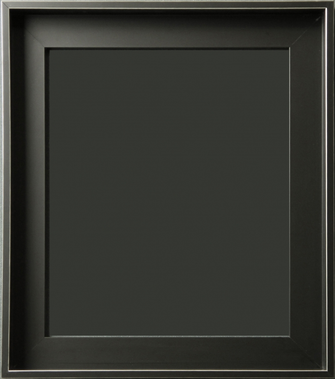

CONVERSATION PIECE
Talk about the death of an imaginary
person.
1963 summer
CONVERSATION PIECE
If somebody is interested, bring out
a black framed photograph of the
deceased and show.
1963 summer
CONVERSATION PIECE
If friends invite you, excuse yourself
by explaining about the death of the
person.
1963 summer
